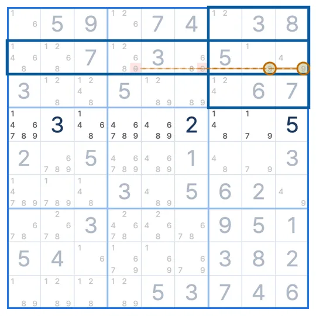

SUDOKU TECHNIQUE · Basics · Intersections
Pointing
Intersection · Pointing Pair · Locked Candidates
Pointing is when every candidate for a digit inside one box lies in a single row or column. That digit can then be removed from the rest of that row or column outside the box.
- Digits to watch
- One
- Where
- One box and a line through it
- What to remove
- That digit on the line, outside the box
The Pointing pattern
The diagram shows digit 4 only. In box 1, 4 can only go in R2C1 or R2C3, and both are in row 2. The candidates point along one line, which is where the name pointing pair comes from.
Why does this work?
Box 1 needs a 4, and the only places for it are two cells in row 2. So row 2 gets its 4 inside box 1.
Row 2 has room for only one 4, so the other cells of row 2 outside the box (columns 5 and 8) cannot be 4. Remove the 4 from them.
How to find the Pointing
- Pick a box and one digit.
- Check whether all its candidates in the box lie in one row or one column.
- If so, remove that digit from the same line outside the box.
It works the same with three candidates in the box, as long as all of them are on one line.
Common questions
How is it different from claiming?
Pointing starts in a box and removes along a line. Claiming starts in a line and removes inside a box. Only the direction changes.
What if the box has only one candidate?
Then that cell is the answer. Fill it in as a hidden single.
Does it work with columns?
Yes. If all the candidates in the box are in one column, remove the digit from that column outside the box.
Related techniques
IN THE SUDOKU LEAGUE APP
Stuck? A hint shows you the Pointing
When you are stuck, a hint marks the candidates in the box and the cells to clear. In Technique Practice you learn the Pointing on a real puzzle. The first board walks you through the pattern and the reason, and on the next one you find it yourself.
